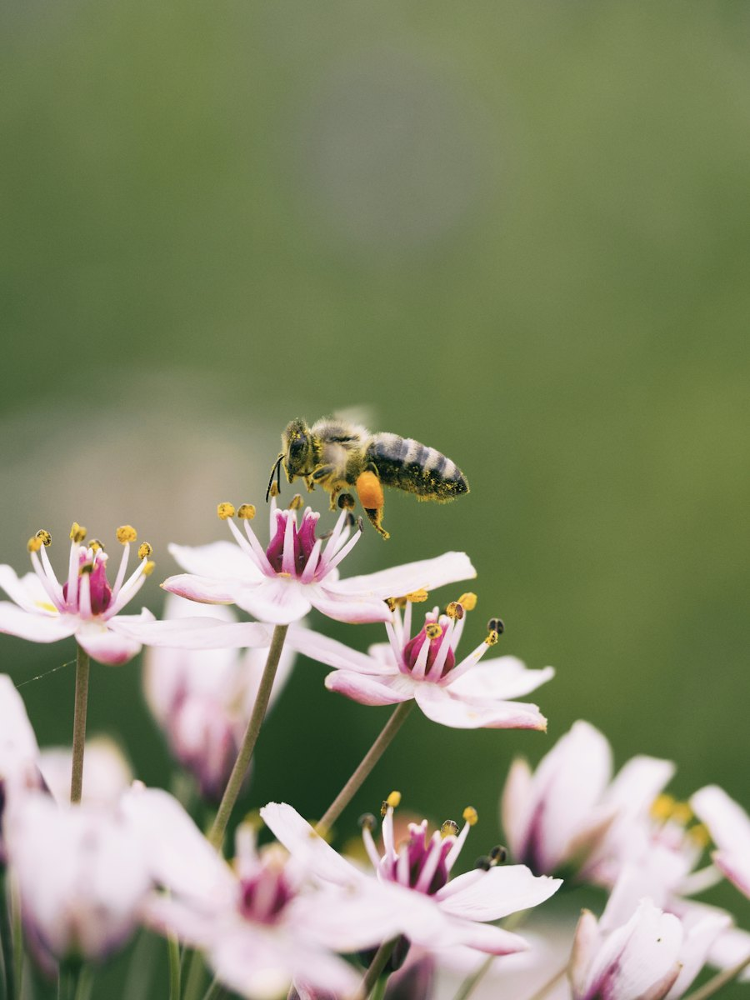
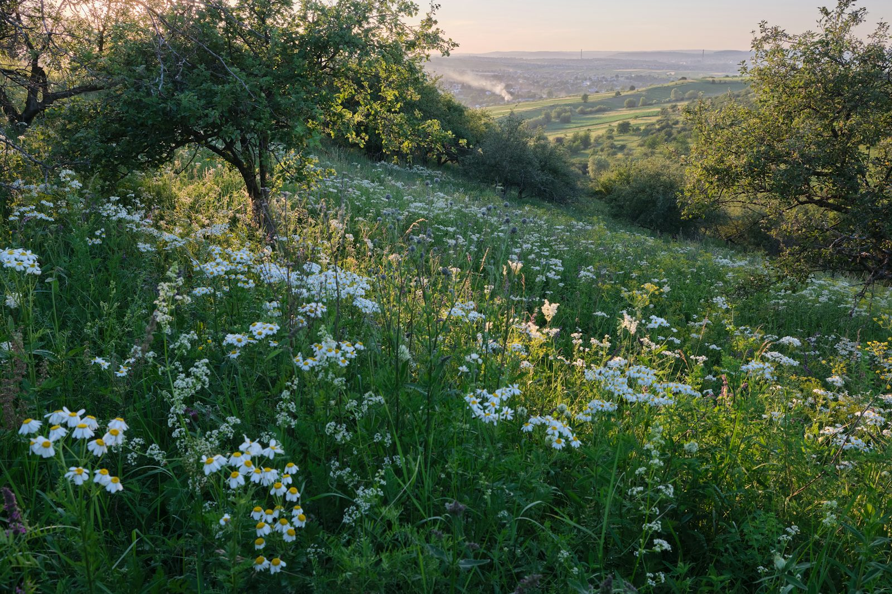
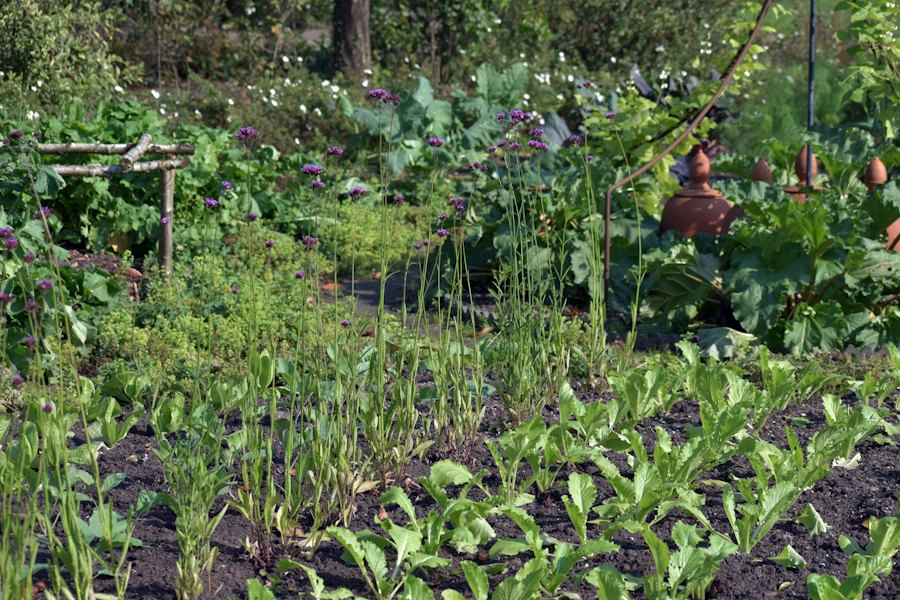
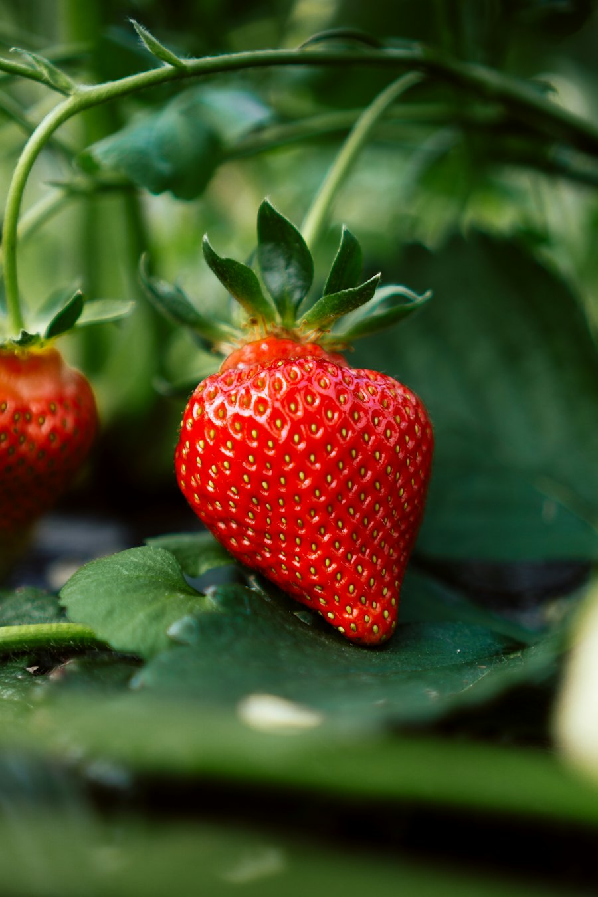

Más polinización
Mejor cuajado, tamaño y forma de los frutos.

PoliCampo te ayuda a rediseñar tu finca con franjas florales y plantas de servicio que atraen polinizadores y controlan plagas de forma natural.
Cargás tu terreno y tus cultivos. PoliCampo mide cuánta superficie tiene hábitat natural y te propone dónde ubicar franjas florales y corredores, con especies compatibles con tu cultivo y tu zona.
Pequeños cambios en el diseño del terreno que mejoran la producción y cuidan el ambiente.

Mejor cuajado, tamaño y forma de los frutos.

Refugio para los insectos benéficos.

Menos insumos externos y menores costos.
Corredores que conectan hábitats.
Con un formulario, un croquis o el mapa.
Cuánta superficie tiene flores frente al 20 % recomendado.
Dónde ubicar franjas y qué plantas son compatibles.
Calendario de siembra y floración, e informe técnico.
Pequeños y medianos productores que quieren mejorar su rendimiento, bajar costos en insumos y avanzar hacia una producción agroecológica, paso a paso.
Profesionales que asesoran fincas y necesitan diagnósticos ordenados, propuestas fundamentadas e informes técnicos para compartir.
Los paisajes que combinan producción con vegetación natural sostienen más polinizadores e insectos benéficos: mejor polinización, menos plagas y sistemas más estables.
Creá tu cuenta, cargá tu finca y recibí tu primer diagnóstico de biodiversidad.